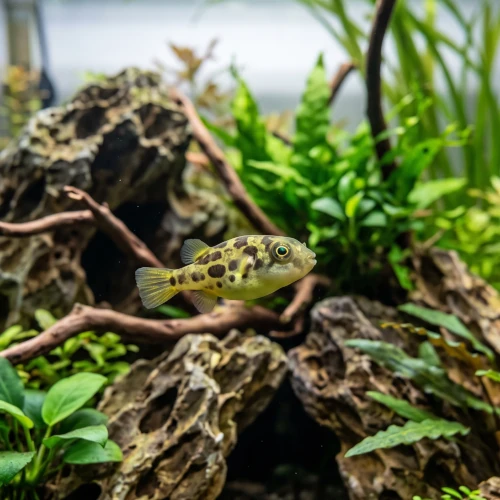

Nome popular principal
Baiacu Anão
Baiacu Anão, Baiacu Anão Indiano, Pea Puffer, Dwarf Puffer
Ficha de peixe
Baiacus de Água Doce
O menor baiacu de água doce do mundo atrai aquaristas por seus olhos expressivos e grande capacidade de controlar caramujos.

Nome popular principal
Baiacu Anão, Baiacu Anão Indiano, Pea Puffer, Dwarf Puffer
Nome científico
Nome técnico essencial para taxonomia, cruzamento de manejo e referência editorial consistente.
Dificuldade de manejo
Use este nível como referência inicial, sempre considerando volume, estabilidade e compatibilidade do aquário.
Seção 1
Seção 2
Seções 4 a 6
Baiacu Anão tem hábito alimentar carnívoro. Média. 1 a 2 vezes ao dia. É um carnívoro exigente que recusa ração seca, necessitando de alimentos vivos ou congelados como artêmia, bloodworms e caramujos.
Machos maduros possuem uma linha escura no ventre e rugas atrás dos olhos; fêmeas são mais arredondadas. Tipo de reprodução: Ovíparo. Dificuldade de reprodução: Avançado. A desova ocorre entre vegetação densa como Musgo de Java, mas os pais não cuidam dos ovos e podem devorá-los.
Alta. Substrato recomendado: Areia fina de rio com bastante vegetação densa. Necessidade de esconderijos: Alta. Prospera em aquários densamente plantados com muitos esconderijos e quebra de linha de visão para reduzir a agressividade territorial.
Seção 7
Raramente ultrapassa 3 cm de comprimento e exige boa qualidade da água devido à sua alta sensibilidade a amônia e nitrito.
Seção 8
Não, o Baiacu Anão (Carinotetraodon travancoricus) é uma espécie exclusivamente de água doce e não tolera sal na água.
Raramente. É um peixe muito seletivo que quase sempre exige alimentos vivos ou congelados como bloodworms e pequenos caramujos.
Ao contrário dos baiacus maiores, os dentes do Baiacu Anão crescem muito devagar e raramente exigem desgastes artificiais se receberem caramujos na dieta.